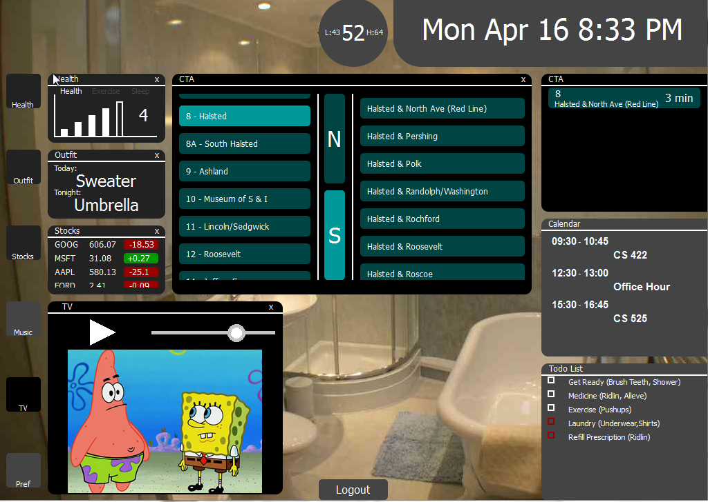

When creating a mirror, it is important to note that the most important function of a mirror is for viewing. Our group never forgot this notion. For every step that we took towards designing this mirror, we took into account that the user will be used to using the mirror with his eyes and nothing else. We tried to eliminate as much contact with a futuristic mirror as possible. Everything in this mirror is for viewing and many of the functions it has is for displaying. Only sometimes can the user alter what he sees, which may be a foreign use of a mirror to them. Something else we took into consideration was leaving enough room at all times for the user to see himself. Sometimes the view may be blocked but a tap of a single button can remove such obstacles.
When the user approaches the mirror and no user is logged in, they will see the reflection of the mirror with a box in the center. This box is for logging in. No matter if you are a new or returning user, all one needs to do is put his right thumb on the box and it will log him in. New users will create a new account while old continue using the one they already have. This is possible because no two people have the same fingerprint.
In order to log out, the user can click the logout button on the bottom center of the screen, or wait for no action for 3 minutes. Listening to music or watching tv count as actions.
The health function is where a user can go to see how he is doing health wise. This fits well with a mirror because a user does a lot of checking himself out in the mirror as it is. Now he is able to go beyond skin level to see how he is doing. The health function follows the Icon Size Window -> Second Window -> Third Window build that we have created. It is possible to have all windows up at once for one given section. From the first click of the icon, the Second Window is opened. The color of the icon changes to #222 representing how many windows are open. This alerts the user which window combination aligns with which sub system that our mirror has.
Here on the second window, it gives the user a quick summary of how he is doing based on general health, exercise, and sleep. Our mirror displays this information in a visual graph because that is how people are used to using mirrors. The graph is very similar to that of a cell phone's signal strength, the more filled in bars shown, the better. The user is able to tab between the three sections viewing what he would like at a very visualy fast pace.
If he were to be more interested in his health, he could click anywhere on the second window except for the tabs to open up the large window. The large window displays detailed information about the user's health. The sections are split off into Nutrients, Medicine, Exercise, and Sleep.
The Nutrients tab has information about the vitamins the user has been eating. We are assuming that in the future there will be a device that the user can wear that will keep track of everything he intakes. When they click this tab of the mirror, they open up the vitamin intake graph. This graph is meant for a quick display of the user's vitamins. Users are most likely not concerned where they sufficient in vitamins, instead they would be concerned for where they lack. The graph shows all sufficient vitamins in a white color and insufficient vitamin levels in red. This unique color immediately grabs the attention of the user and he is alerted of his weakness.
The other tab here in the nutrients section is a suggestion area. The suggestions here tell the user what foods to eat to be better supplimented of those vitamins that they lack in.
The medicine tab has information about the medicine the user is taking. The user can add medicine by clicking the "Add Med" button then scanning the barcode in the camera at the top of the mirror. Once it is scanned, it will appear in both the Pills Left and Schedule tabs.
The schedule tab is the first tab that is seen by the user when he enters the medicine section. This allows the user a quick in out of the sub system. Something interesting that the schedule tab does is on the day medicine needs to be taken, it will update the Todo List remdinding the user to take the medicine.
The other tab the user can go to in the medicine section is "Pills Left". The pills left area measures the amount of pills each medicine has left. When the pill count of a specific medicine gets low, the graph will show a red outline of that medicine. This again alerts the user right away that something needs to be done. This alert will also be in the todo list with the key name "Prescription."
The outfit sub system is there to help make choosing an outfit easier for the user. The outfit function follows the Icon Size Window -> Second Window -> Third Window build that we have created. It is possible to have all windows up at once for one given section. From the first click of the icon, the Second Window is opened. The color of the icon changes to #222 representing how many windows are open. This alerts the user which window combination aligns with which sub system that our mirror has.
The second window gives the user a quick tip on what he should wear for the day and the night. This information is affected based on what the weather is for the day.
If the user clicks anywhere within the second window, they will open up the third window. The third window is a unique area in that it allows the user to choose an outfit from his clothes. This is assuming some day there is an ability to track clothes in one's closet. When that day comes, this tool will allow them to build an outfit for the day as well as keep information on clean and dirty clothes. When the user is running low or is out of a certain article of clothing, the system will outline it in red and will send the same notification to the todo list marked as "Laundry."
The stocks sub system helps the user keep track of stocks. MONEY IS IMPORTANT! The stocks function follows the Icon Size Window -> Second Window -> Third Window build that we have created. It is possible to have all windows up at once for one given section. From the first click of the icon, the Second Window is opened. The color of the icon changes to #222 representing how many windows are open. This alerts the user which window combination aligns with which sub system that our mirror has.
Here on the second window, the user will see a quick display of stock information. The information seen here is based off of the user's Google Account. All the stocks in any of the user's Google Finance Portfolios will be sent here for tracking. Display here is the Ticker name, the current price, and the change in price. When the change in price for a particular stock is greater than 0, the change will have a background of green. Else, it will have a background of red. Since this is the only color used on this window, it is very obvious to the user whether or not his stocks are doing well, even without reading the numbers. Since the mirror has been used for viewing purposes for centuries, we decided to leave that function the same. Stocks cannot be traded, only tracked. Stock ticking information is reloaded every 5 seconds.
The third window of the stocks sub system is a more detailed version of the first. Here more information can be seen as well as a graph of the stocks information over the past 30 days.
Multiple sources of audio running at once does not sound pleasant to the human ear, this is why only one of the windows tv or music can be open at once. The purpose of the music sub system is to give the user some music to listen to while they are in front or near the bathroom.
When the music icon is clicked, it will shut down the tv window if it is open. Once the music window is opened, the user will be able to select from a list of artists on the left side. Clicking the artist will open up a list of songs they made on the right. This information is gained through the local network and shared songs. Basic controls of increasing volume, start playing, and pausing exists.
The tv function works the same way that music does.
The preferences sub system is simply for changing language, Google Account to sync with, and wifi information.
The clock is also another simple device. Using Javascript's Date() class, we are able to sync the clock with the system clock of the user. This will make the date and time local relative to where the user is located.
The weather sub system is always displayed in the top of the screen. The background of the first level weather display should accurately represent what the weather is like outside. For example, a circle represents clear skies or a sunny day. In the center of this visual display is the current temperature. To the right of this is the high, and to the left is the low. This lets the user get a quick sample of what the day is going to be like without wasting much time or having to touch the screen.
If the user decides to be adventurous and click the first display, they will be brought to the four day forecast. Again there are visuals to help the user get through it faster without having to do any reading. There are also temperatures of lows and highs that are expected for each day. The user can switch between degrees celcius and farenheit.

CTA Tracker! Hurray Chicago citizens. This is the most useful tool a user who lives in chicago can use. In other areas, this would most likely be replaced by a travel/directions application. The cta tracker is one of the 3 permanent windows that are always open. The cta is also the closest application to the clock because it directly relates to it. The time tracked for a bus incoming will be only useful if you know what time it currently is.
All buses that are being tracked will be in this first window. Information such as route number, stop location, and eta will be displayed here.
When anywhere in the first window is clicked, the user will be brought to the large cta window. Here they can select a route, a direction, and a stop location. After the stop location is selected, the bus will be added to the tracking system. All information gained is straight from the CTA bustracker API.
The calendar sub system is there to help the user know what he has to do today. It is always displayed. Here at the first level, the user can see what he has to do today. This information is grabbed from his Google Account.
When the user clicks the first level of the calendar, he will be brought to the second level. Here on the second level the user can view what he has to do over a set amount of time. All the information is gathered from Google. The user cannot do any editting, only viewing.
The Todo List is used as the mirrors alert box. None of the options found here were generated by the user, instead the mirror decides what is displayed here. Many of the items were described in the above sections. Overall, these are tasks that the user does at home because the mirror cannot be brought with him. The warnings in red are ones that are depend on low numbers in another sub system. The red needs immediate action to disappear.